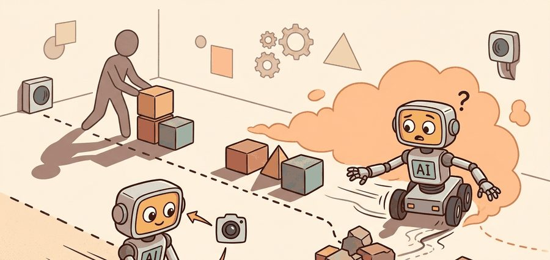
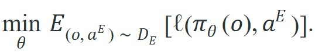
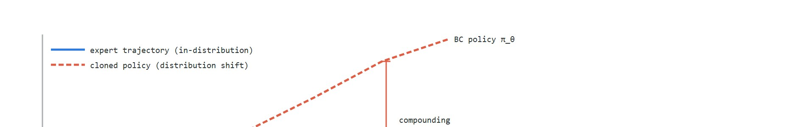

"The expert never made that mistake, so the policy was never taught to undo it. Every small error compounded into territory the training data had never mapped."
A Cloned Policy, Drifting

This section assumes familiarity with supervised learning loss functions and the Markov decision process formulation introduced in section 14.1. The distribution-shift problem diagnosed here is resolved through dataset aggregation in section 21.3, and the same covariate-shift challenge recurs in Part VII alongside vision-language-action models in section 34.2, where large pretrained policies face identical out-of-distribution recovery demands.
A robot arm learns to stack blocks by watching a human do it flawlessly two hundred times. At test time, one joint overshoots by three degrees. The expert never made that error, so the cloned policy has no idea how to recover; each corrective attempt pushes deeper into territory the training data never mapped, and the tower falls every time. This compounding failure is distribution shift, and it is the central reason behavior cloning breaks on real hardware even when training loss hits zero. Right now, as robotics labs scale up teleoperation datasets to millions of demonstrations, understanding exactly why and how fast this collapse happens is not academic: it determines whether those datasets are worth collecting at all. Work through the math here and you will be able to bound the error growth, diagnose it in rollout logs, and know precisely what dataset aggregation must fix next.
Train a policy to copy a flawless expert, drive the training loss to exactly zero, and then watch it fail nine times out of ten the moment it touches real hardware: that paradox is the whole story of behavior cloning, the simplest form of imitation learning, which treats a set of expert demonstrations as a labeled dataset and fits a policy with ordinary supervised learning, mapping each observation to the action the expert took. This seemingly straightforward setup breaks under distribution shift (the mismatch between the states the expert visited and the states the trained policy actually reaches), and the sections below explain why, bound how fast the resulting error grows, and show how to diagnose it in closed-loop rollout logs. Figure 21.2A illustrates the core failure: the policy's own compounding errors push the system off the demonstrated state manifold, where the cloned policy was never given a recovery signal. This section develops the technical contract for behavior cloning into a usable mental model: first we define the object of study, then we connect it to the agent loop, then we test it with a compact implementation.
The key question in Behavior cloning; the distribution-shift problem is practical: what must the agent know, what can it observe, what action is available, and what evidence shows that the action worked under the stated conditions?
A representation earns its place when it changes the measurable action interface. In behavior cloning; the distribution-shift problem, the reader should keep asking which decision becomes easier, safer, or more reliable.
For Behavior cloning; the distribution-shift problem, the practical design rule is to make the interface inspectable before optimization begins: inputs, outputs, units, latency, bounds, and failure labels should all be visible in the saved artifact. Concretely, this means logging the Mahalanobis distance from the expert state distribution at every closed-loop timestep, not only the supervised action loss: a policy audit that records only training-time MSE cannot answer the question this section exists to answer, namely when and how fast the rollout leaves the expert manifold.
The mechanism in Behavior cloning; the distribution-shift problem is the contract between representation and action. Name what enters the module, what leaves it, which assumptions make that transformation valid, and which log would reveal a bad handoff.
Keep one concrete rollout in view: a Franka Panda arm running a cloned policy on the robomimic Lift task. The wrist-camera RGB and joint proprioception become an end-effector pose estimate, that estimate sets a delta-pose action at 20 Hz, the action moves the gripper toward the cube, and the next observation either confirms the approach or reveals that the gripper is now 3 cm off-center, a state none of the 200 human teleoperation demonstrations ever recorded. Behavior cloning is useful here only if it keeps that closed loop on the expert manifold long enough to close the gripper on contact.
from pathlib import Path
dataset_root = Path("robot_demos")
for episode in sorted(dataset_root.glob("episode_*")):
print("inspect", episode.name)
print("next step: convert demonstrations to the LeRobotDataset format")robot_demos directory of per-episode folders and prints each episode name, then prints the target format (LeRobotDataset) for the conversion step. The point is to surface the raw episode listing before LeRobotDataset or robomimic takes over storage, batching, and visualization.Expected output: the printed trace for Behavior cloning; the distribution-shift problem should expose the method configuration, the measured evidence field, and the failure label. If one of those fields is missing or unchanged under the perturbation, the example is not yet an evaluation artifact.
Use robomimic or LeRobot to train the supervised policy, then run closed-loop rollouts with identical resets, seeds, camera views, and action scaling so imitation loss and task success can be interpreted together.
Behavior cloning turns imitation into supervised learning over the Markov decision process that the agent loop defines. Given expert pairs $\mathcal{D}_E = \{(o_i, a_i^E)\}_{i=1}^N$, the learner fits $\pi_\theta$ by minimizing an action loss under the expert visitation distribution:

For continuous robot actions, $\ell$ is often mean squared error or negative log likelihood under a Gaussian policy. For discrete actions, it is usually cross entropy. The hidden assumption is stronger than it looks: test-time observations must remain close to the expert observations used during training. Once the learned policy makes an error, it visits observations the dataset barely covers. The next prediction then runs out of distribution. This failure mode is called covariate shift: the input distribution $p(o)$ changes at test time while the optimal action given a state stays the same. A cloned policy trained only on expert states is a map drawn only for roads the expert never left. This section uses the two terms interchangeably because behavior cloning exhibits both. The cost compounds quadratically. A policy with 1% per-step error over a 100-step horizon accumulates roughly ten times the total deviation of a policy with 10% error over just 10 steps ($100^2 \times 0.01 = 100$ versus $10^2 \times 0.10 = 10$). Doubling the task horizon can therefore matter far more than halving the error rate, at least under the naive-BC assumption that per-step error stays roughly constant along the rollout. The diagram below plots this divergence directly: the expert trajectory stays inside the in-distribution manifold band while the cloned policy's trajectory drifts upward off that band starting at the drift-onset point $t^*$.
So far: behavior cloning fits a policy to expert observation-action pairs by supervised loss, but this training-time objective silently assumes test-time observations stay close to the expert distribution; once the policy's own small errors push it off that distribution (covariate shift), compounding pushes the error bound toward $O(T^2\epsilon)$ rather than growing linearly with the horizon $T$.

That quadratic cost is an abstraction on a chart, but on a robot each unit of accumulated deviation is a physical event with physical consequences. For an embodied robot, covariate shift is not merely a statistical inconvenience: it collides with hard physical limits. A robot arm that drifts 4 cm off-center does not stall gracefully; it applies unexpected contact forces, saturates joint torque limits, or topples an object that cannot be repositioned without human intervention. Unlike a software agent that can reset with a keystroke, a physical robot accumulates irreversible consequences: bent fingers, scattered parts, or a safety-stop that halts the entire cell. This is why a cloned policy that looks excellent on held-out frames can become genuinely dangerous on hardware the moment it enters an undemonstrated state.
The mechanism runs step by step. At timestep 1 the policy makes a small error $\epsilon_1$ that nudges $o_2$ off the expert manifold. It never trained on $o_2$, so it returns a larger error $\epsilon_2 \geq \epsilon_1$, and each successive observation drifts further. No recovery states carry a gradient signal, so nothing pushes the policy back: in the worst case analyzed by Ross et al. (2011), the drift is monotone in expectation, which makes the $O(T^2\epsilon)$ bound tight rather than pessimistic under that analysis. Halving the horizon therefore cuts the accumulated cost roughly fourfold rather than twofold in this regime, which is why task decomposition can be a more effective lever than collecting more demonstrations of the same length, though the actual benefit depends on how cleanly the task splits into shorter sub-horizons.
In practice, real rollouts rarely follow the worst-case bound exactly: recovery behavior learned incidentally from nearby demonstrations, environment damping, or task-specific forgiveness (a wide bin instead of a narrow slot) can flatten the observed curve well below $O(T^2\epsilon)$. The bound is a diagnostic ceiling for reasoning about scaling, not a guaranteed rollout trajectory.
Before reading the algorithm below, consider: if a cloned policy has just a 1% per-step error rate and the task takes 200 steps, how large is the total accumulated cost compared with a policy that has 2% error over only 50 steps? The answer changes how you should think about task horizon when designing your demonstration collection protocol.
Input: Expert demonstration dataset $\mathcal{D}_E = \{(o_i, a_i^E)\}_{i=1}^N$, policy network $\pi_\theta$ with parameters $\theta$, learning rate $\alpha$, horizon $T$, number of closed-loop rollouts $R$
Output: Trained policy $\pi_\theta^*$ and per-rollout distribution-shift diagnostic (first off-expert timestep, compounding error length)
A common assumption is that collecting more expert demonstrations is sufficient to fix distribution shift: if the policy drifts off course, simply adding more demonstrations of the same successful trajectories will close the gap. This is wrong in the embodied AI context because expert demonstrations, by definition, never show recovery from the error states the cloned policy will enter. No matter how large the dataset grows, it remains a sample from the expert visitation distribution, which excludes precisely the off-manifold states where the deployed policy most needs guidance. The correct mental model is that distribution shift is a structural property of behavior cloning, not a data-quantity problem: the policy needs exposure to its own mistakes and correction signals, which requires interactive collection methods such as DAgger rather than larger offline datasets of expert-only trajectories.
Think of a novice cook following a recipe who misreads "a pinch of salt" as a full teaspoon at step three. Every subsequent step, tasting, adjusting seasoning, reducing the sauce, was designed for the correct saltiness, so each one makes things slightly worse rather than better. The damage is not linear: the wrong salt level changes the texture, which changes how long the sauce reduces, which changes the final consistency, and each of those deviations opens new gaps the recipe never addressed. A single early error does not add one bad step; it corrupts the context that all later steps rely on, so the total harm grows with the square of how many steps remain.
If the policy has a per-step error rate $\epsilon$ under expert states, a horizon-$T$ rollout can accumulate roughly $O(T^2\epsilon)$ cost under naive behavior cloning because early mistakes change the future state distribution. This is the central reason a high validation score on demonstration frames can still produce poor closed-loop robot behavior.
Trace the drift-onset audit with a tiny example. Take a per-step error rate $\epsilon = 0.10$ (10% chance the action lands off-manifold) and a Mahalanobis threshold $\delta = 2.0$. Assume each off-manifold step adds 0.6 to the running drift distance and that once the policy leaves the manifold every later step also stays off-manifold (no recovery signal).
Step 1: $o_1$ is the reset state, $d_1 = 0.0$. Action error this step pushes the next state slightly: $d_2 = 0.6$.
Step 2: $d_2 = 0.6 < 2.0$, still in-distribution. Error compounds: $d_3 = 1.2$.
Step 3: $d_3 = 1.2 < 2.0$, still in. Compounds again: $d_4 = 1.8$.
Step 4: $d_4 = 1.8 < 2.0$, barely in. Next step crosses: $d_5 = 2.4$.
Step 5: $d_5 = 2.4 > 2.0$. This is the first off-expert timestep, so $t^* = 5$. From here the policy has no recovery gradient and the gripper is now off-center.
The single-step error never exceeded 0.6, yet four such errors stacked into a threshold crossing. Doubling the horizon to 10 steps would push $d_{10}$ to roughly 5.4, almost three times $\delta$: the cost scales with the square of the remaining horizon, not linearly, exactly the $O(T^2\epsilon)$ behavior the algorithm above is built to detect.
A classic failure mode appears in robotic block-stacking: a policy trained on 50 human teleop demonstrations achieves under 5% action MSE on held-out frames, yet completes the task in fewer than 20% of closed-loop rollouts. The breakdown is not perception failure; it is positional drift. The gripper arrives at the block 3 to 4 cm off-center, a state the demonstrator never produced, and the policy has no recovery signal for that region. The fix is not more data of the same kind; it is either interactive correction (DAgger) or explicit recovery demonstrations seeded from failure states.
NVIDIA's DAVE-2 system cloned steering from human driving video, and engineers found the car drifted toward the road edge because clean human demonstrations never showed how to recover from a near-departure. Their fix was to synthesize off-center camera views with corrective steering labels, directly injecting the recovery states that pure behavior cloning lacks. This is the same distribution-shift failure and remedy described above, deployed on a real vehicle.
The same recovery gap that forced NVIDIA to synthesize off-center driving views shows up, quantified, in a manipulation benchmark where dataset composition can be controlled directly. Consider a specific case. In the robomimic Can task (a pick-and-place benchmark with 200 human demonstrations), a behavior-cloning policy trained with BC-RNN (a recurrent neural network policy head trained with the standard behavior-cloning supervised loss, where the recurrence lets the action depend on a short history of past observations rather than only the current frame) reaches roughly 70% task success on proficient-operator demonstrations. The same policy drops to under 30% on multi-human mixed-quality data. The gap is not model capacity; it is covariate shift that inconsistent operator styles amplify. One operator's recovery moves produce states that fall out of distribution for another operator's nominal trajectory, and the policy interpolates between them incorrectly under closed-loop execution. The robomimic paper (Mandlekar et al., 2021) reports this result. It is one of the more widely cited published benchmarks showing that dataset composition, not just dataset size, determines where BC breaks.
In robomimic, use the filter_key field in your training config (set it to "train" for proficient-only splits, available as worse_operator, better_operator, or all in the provided HDF5 files) to train on proficient demonstrations only before exposing the policy to mixed-quality data. This single parameter swap reproduces the 40-percentage-point success gap from the Can benchmark without changing any model hyperparameter, making it the fastest way to confirm that your failure is data composition rather than architecture. Do not pool all demonstrations by default; always inspect the per-operator action variance in your HDF5 file with h5py before setting filter_key, because silent concatenation of recovery and nominal trajectories is the most common source of unexplained covariate shift in offline imitation experiments.
Code Fragment 21.2.2 computes a tiny behavior-cloning loss and then shows how a one-step position error changes the next observation region.
# Compute a behavior-cloning loss and expose the distribution-shift issue.
# The second line shows how a small action error moves the next observation.
import numpy as np
expert_action = np.array([0.10, 0.00])
policy_action = np.array([0.07, 0.04])
bc_loss = np.mean((policy_action - expert_action) ** 2)
next_observation_error_cm = np.linalg.norm(policy_action - expert_action) * 100
print(f"BC loss: {bc_loss:.4f}")
print(f"next observation offset: {next_observation_error_cm:.1f} cm")A serious behavior-cloning report separates held-out episodes from held-out tasks. Held-out episodes test interpolation within the same task family; held-out tasks test whether the policy learned a reusable sensorimotor pattern rather than memorizing reset poses, object identities, or operator timing.
The common mistake in Behavior cloning; the distribution-shift problem is to celebrate the component score before checking the closed-loop handoff. The failure usually appears at the boundary: stale state, wrong frame, delayed action, saturated actuator, or metric that ignores the real task cost.
A robot learning engineer applying behavior cloning; the distribution-shift problem starts by recording the robot body, camera setup, action units, operator source, and split policy for every episode. That record makes it possible to compare LeRobot with a baseline without changing the task definition midstream.
Treat behavior cloning; the distribution-shift problem like a control-room label. If the label does not tell a future debugger what moved, what sensed, or what failed, it is decoration rather than engineering knowledge.
Diffusion-based behavior cloning. Replacing the deterministic action head with a denoising diffusion process substantially shrinks the compounding error rate by modeling the full multimodal action distribution instead of its mean. Diffusion Policy (Chi et al., 2023, RSS) demonstrated this on contact-rich manipulation tasks, and follow-on work in 2024 from the Columbia Robot Learning Lab scaled it to visuomotor control with wrist cameras, achieving recovery from off-manifold states that earlier MSE-trained clones could not handle. The practical payoff is a measurably lower $t^*$ (first off-expert timestep) across diverse grasping scenarios.
Scaling internet-pretrained representations to reduce covariate shift. Pretrained vision-language-action backbones (Octo, OpenVLA, pi0) dramatically shrink the distribution mismatch between expert states and test-time observations because the backbone has seen far more visual diversity than any teleoperation dataset. The Physical Intelligence pi0 model (Black et al., 2024) showed that flow-matching (a training method that learns to transform random noise into an action sample by following a continuous path, which lets the policy represent multiple plausible actions instead of collapsing to a single mean action) on top of a pretrained VLM backbone reduces the per-step error rate by roughly half on dexterous manipulation benchmarks compared to training from scratch, shifting the $O(T^2\epsilon)$ bound substantially for long-horizon tasks.
Autonomous error recovery via data augmentation at failure boundaries. Rather than collecting more expert-only demonstrations, a 2024 direction pioneered by the Berkeley Robot Learning Lab (STEM: Selective Task-Error Margins, and related work on RLPD seeded from failure states) seeds the demonstration buffer with rollout segments that start near the boundary of the expert manifold and uses RL or human correction to generate recovery trajectories automatically. This directly attacks the structural gap that pure BC cannot close without interactive data.
Open problem for PhD students. All three directions above reduce covariate shift but measure it differently (task success rate, Mahalanobis distance, intervention rate). There is no agreed protocol for computing the first-off-expert timestep $t^*$ across embodiments, control frequencies, and reset distributions. A principled, embodiment-agnostic covariate-shift benchmark that separates data-composition effects from architecture effects would immediately clarify which 2024 methods actually solve the distribution problem versus which ones benefit mainly from larger pretraining budgets.
Can you name the observation, state estimate, action, success metric, and most likely failure mode for behavior cloning; the distribution-shift problem? If not, the system boundary is still too vague.
Behavior cloning; the distribution-shift problem becomes useful when it is tied to a closed-loop contract. In this Part V section on Behavior cloning; the distribution-shift problem, the contract names the observation stream, the state estimate, the action representation, the timing budget, and the evaluation artifact. Without that contract, a model can look capable in a notebook while failing the first time a sensor drops a frame or a controller saturates.
For Behavior cloning; the distribution-shift problem, separate the conceptual claim, the systems claim, and the evidence claim. A plausible mechanism, a clean interface, and a closed-loop result are different claims; the section should keep their evidence separate.
| Tool or Library | Role in BC and Distribution-Shift Work | Builder Advice |
|---|---|---|
| Gymnasium | Provides deterministic reset distributions and step-by-step observation logs needed to measure the first timestep $t^*$ where the BC policy leaves the expert manifold; the seeded reset is critical for comparing covariate-shift onset across policy checkpoints. | Pin the reset seed and record per-step Mahalanobis distances from the start; do not aggregate over rollouts before you have verified that individual rollouts show consistent drift onset. |
| PettingZoo | Supports multi-agent reset and observation isolation; useful when BC experiments involve more than one manipulator arm sharing a workspace, where one agent's drift changes the state distribution seen by a second cloned policy. | Use only when the task genuinely requires coordinated manipulation; single-arm BC experiments do not need PettingZoo and the added synchronization overhead obscures per-agent drift logs. |
| ROS 2 | Bridges the sim-to-real gap by providing the same topic-and-service interface on a Franka Panda or UR5 as in a MuJoCo simulation; a BC policy exported as a ROS 2 node can be evaluated on hardware without rewriting the inference loop, so the same distribution-shift audit script runs in both environments. | Record end-effector pose at 500 Hz via robot_state_publisher during closed-loop rollouts; the high-rate log exposes 3-4 cm positional drift that 20 Hz control logs miss and that directly predicts task failure at grasp contact. |
| MuJoCo | Renders contact forces and joint torques that are invisible in frame-level behavior-cloning datasets; running closed-loop BC rollouts in MuJoCo lets you correlate Mahalanobis drift in observation space with contact-force anomalies, identifying whether the policy fails because of positional error or unexpected contact geometry. | Use the mj_step substep count (default 5) to keep simulation physics stable under the 20 Hz control loop typical of teleoperated datasets; mismatched substep rates produce spurious contact events that inflate measured covariate shift. |
| LeRobot | Stores demonstrations in a standardized HDF5 format with per-episode metadata (robot model, camera intrinsics, control frequency, operator ID) that makes it straightforward to split by operator quality and reproduce the 40-percentage-point success gap from the robomimic Can benchmark; the filter_key mechanism maps directly onto BC distribution-shift experiments. | Always call dataset.episode_data_index to verify episode boundaries before computing held-out splits; silent episode boundary errors produce train-test leakage that makes BC loss appear lower than it is on genuinely held-out rollouts. |
For Behavior cloning; the distribution-shift problem, start with a small baseline that logs inputs, outputs, units, timestamps, and termination conditions before moving to Gymnasium or PettingZoo. The library run should keep the same artifact schema, so the comparison remains a same-task evaluation.
When Behavior cloning; the distribution-shift problem fails, avoid labeling the whole method as weak. First assign the failure to perception, state estimation, planning, control, timing, data coverage, or evaluation. Then rerun one controlled perturbation that isolates the suspected cause. This pattern turns a disappointing rollout into a reusable diagnostic asset.
Behavior cloning; the distribution-shift problem should be evaluated through four lenses: the learning objective, the robot interface, the data artifact, and the deployment failure mode. A demonstration is not a self-sufficient label; it is a trajectory sampled from an expert distribution that the learned policy will later disturb.
For behavior cloning, the workflow centers on covariate shift: define the expert state distribution, train supervised action prediction, then evaluate closed-loop drift under the same task panel instead of reporting only held-out action loss.
Behavior cloning demonstrations are contracts over state distribution. Once the learned policy visits states the expert rarely visited, the contract is broken unless the evaluation records drift and recovery.
| Agent Lens | Question To Answer | Concrete Evidence |
|---|---|---|
| Curriculum and depth | What concept is new here, and why does Part V need it? | A definition, a worked example, and a failure case tied to the perception-action loop. |
| Code and tools | Which maintained tool removes boilerplate after the from-scratch baseline? | LeRobot, robomimic, DAgger, behavior cloning, dataset aggregation evaluated against the same task contract. |
| Data and evaluation | What distribution produced the behavior, and where can it break? | Train, validation, and stress splits with explicit robot, camera, timing, and license metadata. |
| Publication quality | Can the reader reproduce the claim without hidden context? | Captions, bibliography cards, cross-links, and a same-artifact audit trail. |
Do not claim that behavior cloning; the distribution-shift problem improves robot learning unless the baseline and the proposed method share the same robot, task split, reset distribution, success metric, and random seed policy. Otherwise the comparison may be measuring dataset difficulty rather than method quality.
For Behavior cloning; the distribution-shift problem, modern imitation systems should be audited as synchronized robot data: images, proprioception, language, actions, timing, operator metadata, and covariate-shift checks.
Who: A manipulation researcher testing whether low validation loss survives closed-loop block stacking.
Situation: The engineer needs to decide whether behavior cloning; the distribution-shift problem is ready for a weekly policy comparison across 120 demonstrations and 30 held-out rollouts.
Decision: For Behavior cloning; the distribution-shift problem, keep the minimal imitation baseline and compare LeRobot or robomimic only on the same manifest, split, seed policy, and rollout evaluator.
Result: The artifact pairs action-prediction loss with rollout drift: first off-expert state, compounding error length, intervention point, and task outcome.
Lesson: Behavior cloning earns trust when supervised fit is connected to closed-loop distribution shift, not when loss alone looks small.
Before leaving this section, write one sentence that links behavior cloning; the distribution-shift problem to each of these connected chapters: Chapter 14: Reinforcement Learning Refresher, Chapter 23: Teleoperation and Data Collection, Chapter 34: Vision-Language-Action Models. If any link feels forced, the section needs a sharper boundary or a clearer prerequisite recap.
Build a small audit artifact that connects behavior cloning; the distribution-shift problem to observations, actions, dataset provenance, evaluation splits, and failure labels.
pip install pandas pydanticCreate a schema with robot, sensor, action, demonstrator, split, and license fields. The goal is to make hidden data assumptions visible before training.
# Define the fields every demonstration episode must expose.
# Include timing and failure-label fields before evaluation.
from pydantic import BaseModel
class EpisodeCard(BaseModel):
robot: str
observation: str
action: str
demonstrator: str
split: str
license: str
control_hz: int = 20
failure_label: str = "none"
def as_row(self) -> dict[str, object]:
return self.model_dump()
episode_card = EpisodeCard(
robot="mobile_manipulator",
observation="front_rgbd plus proprioception",
action="delta_end_effector_pose",
demonstrator="teleop",
split="train",
license="CC-BY-4.0",
control_hz=20,
failure_label="none"
)
print(episode_card.as_row())Write one clean demonstration and one stress episode. Keep the same schema so the difference is visible in values, not in ad hoc notes.
# Create one normal episode and one stress episode for comparison.
# The example includes the stress condition explicitly so the audit can run end to end.
episodes = [
EpisodeCard(
robot="dual-arm",
observation="front and wrist cameras",
action="joint deltas",
demonstrator="teleop",
split="train",
license="CC-BY-4.0",
control_hz=20,
failure_label="none",
),
EpisodeCard(
robot="dual-arm",
observation="front and wrist cameras",
action="joint deltas",
demonstrator="teleop",
split="stress",
license="CC-BY-4.0",
control_hz=10,
failure_label="delayed_grasp_recovery",
),
]
if isinstance(episodes, list):
print({"rows": len(episodes), "first": episodes[0] if episodes else None})
elif isinstance(episodes, dict):
print({"fields": sorted(episodes), "audit_ready": all(value not in (None, "") for value in episodes.values())})
else:
print({"value": episodes})Convert the cards to a table and save one CSV artifact. This mirrors the book's rule that compared numbers must come from one configuration and one saved artifact.
# Save one audit table for the baseline and library route.
# Add metric columns after the rollout script runs so the artifact is evaluable.
import pandas as pd
rows = [episode.model_dump() for episode in episodes]
pd.DataFrame(rows).to_csv("part_v_episode_audit.csv", index=False)
print("saved", len(rows), "episodes")Replace custom loading code with the maintained tool named in this section, but keep the same manifest fields. The shortcut is allowed to reduce boilerplate, not to change the evaluation question.
# Validate the maintained-tool route without changing the audit schema.
library_route = {"tool": "LeRobot", "artifact": "part_v_episode_audit.csv"}
required_fields = {"tool", "artifact"}
missing = sorted(required_fields - set(library_route))
assert not missing
print({"loader_ready": True, "tool": library_route["tool"], "artifact": library_route["artifact"]})The lab should produce part_v_episode_audit.csv with one row per episode and enough metadata to compare a baseline with a library implementation under the same configuration.
Complete Solution
# Complete solution for the Part V audit lab.
from pydantic import BaseModel
import pandas as pd
class EpisodeCard(BaseModel):
robot: str
observation: str
action: str
demonstrator: str
split: str
license: str
timing_hz: int
failure_label: str
def as_row(self) -> dict[str, object]:
return self.model_dump()
episodes = [
EpisodeCard(
robot="dual-arm",
observation="front and wrist cameras",
action="joint deltas",
demonstrator="teleop",
split="train",
license="CC-BY-4.0",
timing_hz=30,
failure_label="none",
),
EpisodeCard(
robot="dual-arm",
observation="front and wrist cameras",
action="joint deltas",
demonstrator="teleop",
split="stress",
license="CC-BY-4.0",
timing_hz=30,
failure_label="object-slip",
),
]
rows = [episode.as_row() for episode in episodes]
pd.DataFrame(rows).to_csv("part_v_episode_audit.csv", index=False)
print("saved", len(rows), "episodes to part_v_episode_audit.csv")Goal: Make the $O(T^2\epsilon)$ compounding-error curve visible empirically, from clean validation loss to closed-loop divergence, in about 20 minutes.
Tools needed: Python with gymnasium, numpy, scikit-learn, and matplotlib. No GPU required.
Procedure: (1) Train a near-expert policy on CartPole-v1 (a quick DQN, or simply hard-code the textbook linear-feedback controller as the expert). (2) Roll out the expert for 50 episodes and store every (observation, action) pair as your demonstration set. (3) Fit a small MLPClassifier (a multilayer perceptron, meaning a feedforward neural network with one or more hidden layers, used here as scikit-learn's standard classifier class) on that set; confirm held-out action accuracy is above 95%. (4) Deploy the cloned policy in closed loop, and at each timestep record the Mahalanobis distance of the current observation from the mean and covariance of the expert states.
What to vary: the number of demonstration episodes (5, 25, 50) and the policy network width (4, 16, 64 hidden units). What to observe: plot per-step Mahalanobis distance against timestep for several rollouts and mark the first crossing $t^*$ of a threshold (e.g. 3.0). You should see that a policy with excellent held-out accuracy still drifts, that $t^*$ arrives earlier with fewer demonstrations, and that the distance curve bends upward rather than rising linearly, the visual signature of compounding error.
Behavior cloning; the distribution-shift problem is useful when it makes the perception-action loop more reliable, not when it merely adds a more impressive model name.
Design a method-matched experiment for Behavior cloning; the distribution-shift problem. Specify the environment, observation schema, action interface, metric, and one perturbation that targets the section's core assumption.
Beginner (weekend): Visualize covariate shift in a Gymnasium CartPole policy. Train a behavior-cloning policy on 50 expert rollouts in Gymnasium CartPole, then log per-step Mahalanobis distance from the expert state distribution during closed-loop evaluation. The key challenge is connecting a low validation loss to a visible drift curve so the $O(T^2\epsilon)$ bound becomes tangible rather than abstract.
Intermediate (1 to 2 weeks): Reproduce the robomimic Can benchmark success gap. Use robomimic's provided HDF5 datasets to train a BC-RNN policy on the proficient-only split and then on the mixed-quality split, running 50 closed-loop rollouts in MuJoCo for each, and plot task success rate against first-off-expert timestep $t^*$. The key challenge is keeping the evaluation pipeline identical across splits (same reset seeds, same camera crop, same action scaling) so the measured gap reflects data composition rather than evaluation inconsistency.
Intermediate (1 to 2 weeks): Deploy a behavior-cloned policy on a real robot via ROS 2. Collect 30 teleoperation demonstrations of a pick-and-place task with a low-cost arm (such as LeRobot's SO-100), train a small MLP policy using LeRobot, export it as a ROS 2 node, and record per-rollout end-effector drift at 500 Hz to identify the first timestep where positional error exceeds 3 cm. The key challenge is matching the simulation control frequency and action normalization to the real hardware so that drift measurements are comparable across environments.
This section grounded behavior cloning; the distribution-shift problem in an explicit robot-data contract: observations, actions, demonstrations, evaluation splits, and failure labels. The next reading step is Section 21.3, where the same contract is carried into the next technique or chapter.
This paper introduces DAgger, the standard fix for covariate shift in sequential imitation learning. Read it when behavior cloning fails after the policy visits states that the demonstrator rarely produced.
Pomerleau, D. (1989). ALVINN: An Autonomous Land Vehicle in a Neural Network. NeurIPS.
ALVINN is an early example of learning control from demonstrations and sensor inputs. It helps readers see that imitation learning's central distribution problem predates modern deep robot policies.
Mandlekar, A. et al. robomimic: A Framework for Robot Learning from Demonstration.
robomimic gives reusable datasets, baselines, and evaluation scripts for demonstration-based manipulation. It is the right tool when a section needs a reproducible behavior cloning or offline imitation baseline.
Hugging Face. LeRobot: Making AI for Robotics More Accessible.
LeRobot standardizes models, datasets, and training utilities for real-world robotics in PyTorch. It is especially useful for connecting small demonstration experiments to shared dataset formats on the Hugging Face Hub.
robomimic v0.1 Datasets Documentation.
The dataset documentation shows how demonstrations, task metadata, and evaluation splits are packaged for reproducible robot learning. Practitioners should read it before inventing a custom data layout.